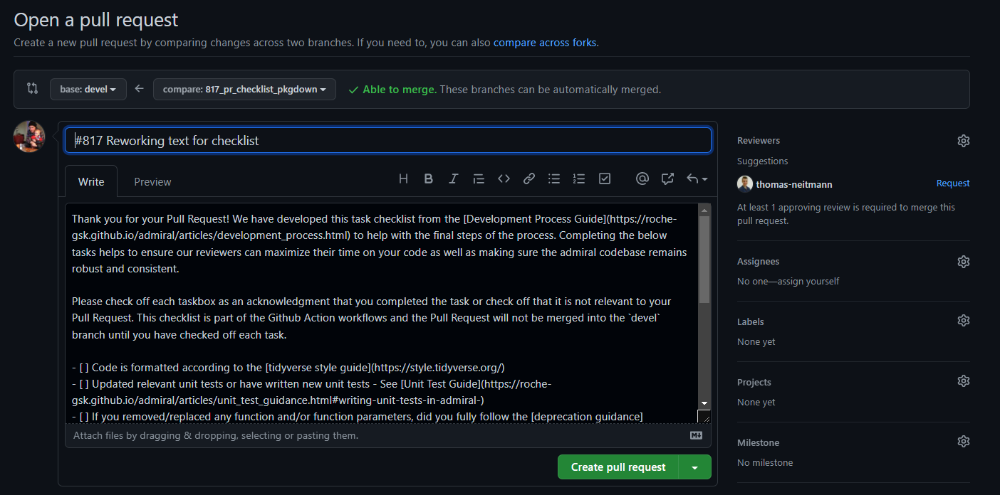
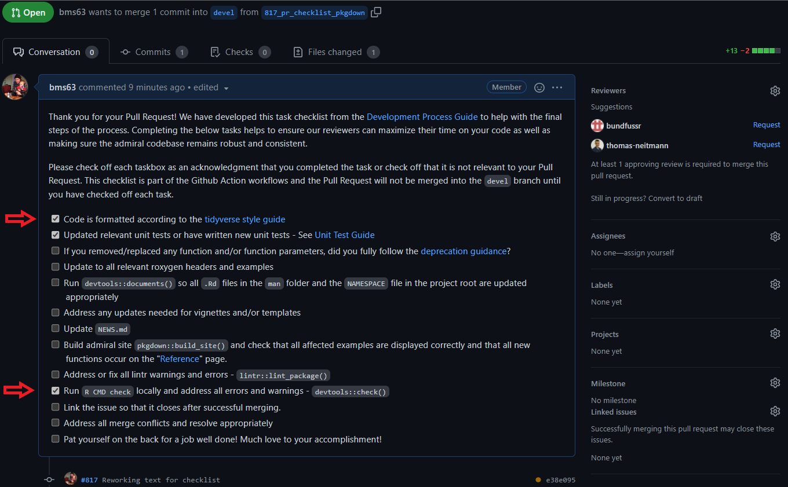
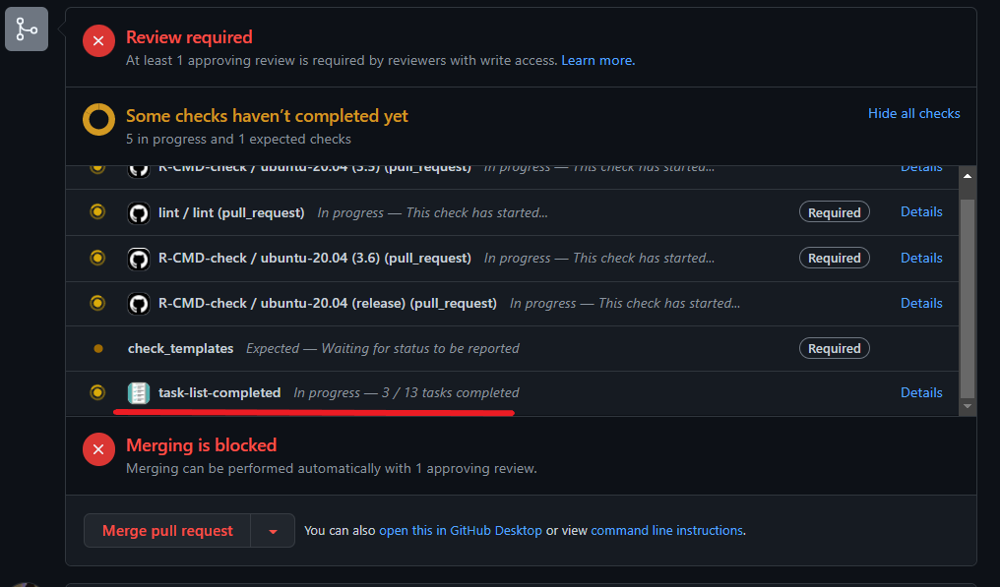

Introduction
This document is intended to be guidance for creators and reviewers of pull requests (PRs) in the admiral package. PR authors will benefit from shorter review times by closely following the guidance provided here.
A pull request into the devel branch signifies that an issue that has been “addressed”. This issue might be a bug, a feature request or a documentation update. For transparency, we keep the issue open until the devel branch is merged into the main branch, which usually coincides with a release of admiral to CRAN. This ensures that repeat issues are not raised and if they are raised are quickly marked as duplicates and closed.
Closely following the below guidance will ensure that our all our “addressed” issues auto-close once we merge devel into main.
Review Criteria
For a pull request to be merged into devel it needs to pass the automated R CMD check, lintr, and task-list-completed workflows on GitHub at a minimum. The first two checks can be run locally using the devtools::check() and lintr::lint_package() commands and are recommended to be done before pushing to GitHub. The task-list-completed workflow is exclusive to GitHub and will be discussed later. In addition, the PR creator and reviewer should make sure that
the Programming Strategy and Development Process are followed
the function is ADaM IG compliant
the function does what is intended for (as described in the header and corresponding issue)
the function header properly explains the intention of the function, the expected inputs (incl. permitted values of parameters) and the output produced; after reading the documentation the reader should be able to predict the output of the function without having to read the source code
the function has an accompanying set of unit tests; for derivations these unit test should have a code coverage of at least 90%; the whole package should have a coverage of >= 80%
the implemented derivation is in the scope of admiral, e.g. does not expect company specific input or hard-code company-specific rules
meaningful error or warning messages are issued if the input is invalid
documentation is created/updated by running
devtools::document()functions which are supposed to be exported are listed in the
NAMESPACEfile; this requires an@exporttag in the function headerexamples print relevant source variables and newly created variables and/or records in their output
the
NEWS.mdfile is updated with an entry that explains the new features or changesthe author of a function is listed in the
DESCRIPTIONfileall files affected by the implemented changes, e.g. vignettes and templates, are updated
So much Red Tape!
The admiral development team is aware and sympathetic to the great many checks, processes and documents needed to work through in order to do a compliant Pull Request. The task-list-completed GitHub workflow was created to help reduce this burden on contributors by providing a standardized checklist that compiles information from the Pull Request Review Guidance, Programming Strategy and Development Process vignettes.
The next three sections give a high-level overview of what a contributor faces in opening a PR, and how a contributor interacts with the task-list-completed workflow in their PR.
Open a Pull Request
When a contributor opens a PR a lengthy standard text will be inserted into the comment section. Please do not alter any of the automated text. You will need to manually add Closes #<insert_issue_number> into the title of the Pull Request. You can use the Edit button in the top right if you forget this step at the start of your Pull Request. Besides that you are free to add in additional textual information, screenshots, etc. at the bottom of the automated text if needed to clarify or contribute to the discussion around your PR.

Create a Pull Request
After you click the green Create pull request button the automated text that was inserted will be turned into a checklist in your Pull Request. Each check box has been drawn from the previously mentioned vignettes and presented in the recommended sequence. These check boxes are meant to be a helpful aid in ensuring that you have created a compliant Pull Request.

Complete all checks
The check boxes are linked to the task-list-completed workflow. You need to check off each box in acknowledgment that you have done you due diligence in creating a compliant Pull Request. GitHub will refresh the Pull Request and trigger task-list-completed workflow that you have completed the task. The PR can not be merged into devel until the contributor has checked off each of the check box items.

Please don’t hesitate to reach out to the admiral team on Slack or through the GitHub Issues tracker if you think this checklist needs to be amended or further clarity is needed on a check box item.
Common R CMD Check Issues
R CMD check is a command line tool that checks R packages against a standard set of criteria. For a pull request to pass the check must not issue any notes, warnings or errors. Below is a list of common issues and how to resolve them.
Check Fails Only on One Version
If the R CMD check workflow fails only on one or two R versions it can be helpful to reproduce the testing environment locally.
To reproduce a particular R version environment open the admiral project in the corresponding R version, comment the line source("renv/activate.R") in the .Rprofile file, restart the R session and then run the following commands in the R console.
Sys.setenv(R_REMOTES_NO_ERRORS_FROM_WARNINGS = "true")
if (!dir.exists(".library")) {
dir.create(".library")
}
base_recommended_pkgs <- row.names(installed.packages(priority = "high"))
for (pkg in base_recommended_pkgs) {
path <- file.path(.Library, pkg)
cmd <- sprintf("cp -r %s .library", path)
system(cmd)
}
assign(".lib.loc", ".library", envir = environment(.libPaths))
r_version <- getRversion()
if (grepl("^3.6", r_version)) {
options(repos = "https://cran.microsoft.com/snapshot/2020-02-29")
} else if (grepl("^4.0", r_version)) {
options(repos = "https://cran.microsoft.com/snapshot/2021-03-31")
} else {
options(repos = "https://cran.rstudio.com")
}
if (!requireNamespace("remotes", quietly = TRUE)) {
install.packages("remotes")
}
remotes::install_deps(dependencies = TRUE)
remotes::install_github("pharamaverse/admiral.test", ref = "devel")
rcmdcheck::rcmdcheck()This will ensure that the exact package versions we use in the workflow are installed into the hidden folder .library. That way your existing R packages are not overwritten.
Package Dependencies
> checking package dependencies ... ERROR
Namespace dependency not required: ‘pkg’Add pkg to the Imports or Suggests field in the DESCRIPTION file. In general, dependencies should be listed in the Imports field. However, if a package is only used inside vignettes or unit tests it should be listed in Suggests because all admiral functions would work without these “soft” dependencies being installed.
Global Variables
❯ checking R code for possible problems ... NOTE
function_xyz: no visible binding for global variable ‘some_var’Add some_var to the list of “global” variables in R/globals.R.
Undocumented Function Parameter
❯ checking Rd \usage sections ... WARNING
Undocumented arguments in documentation object 'function_xyz'
‘some_param’Add an @param some_param section in the header of function_xyz() and run devtools::document() afterwards.
Outdated Documentation
❯ checking for code/documentation mismatches ... WARNING
Codoc mismatches from documentation object 'function_xyz':
...
Argument names in code not in docs:
new_param_name
Argument names in docs not in code:
old_param_name
Mismatches in argument names:
Position: 6 Code: new_param_name Docs: old_param_nameThe name of a parameter has been changed in the function code but not yet in the header. Change @param old_param_name to @param new_param_name and run devtools::document().